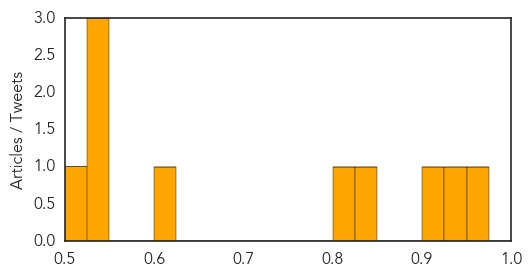

Measles
30-Day Web Trend
0 alerts, 0 warnings
30-Day Twitter Trend
3 alerts, 0 warnings

Article Locations

Article Confidences
Top Articles:
- 0.963
- From #Kyrgyzstan to #Atlanta – a case of #measles on the move
- 0.947
- Parents Still Seek Natural Exposure to Viruses
- 0.925
- State vaccination rate dropping
- 0.838
- Taiwanese travelers to Europe ...｜Society｜WCT
- 0.824
- First measles vaccine batch arrives in Sudan amid outbreak
- 0.606
- Measles confirmed at Terry Fox Secondary School
- 0.545
- 11th case of measles confirmed in B.C. as debate on mandatory vaccinations continues
- 0.533
- Air China measles cases rising across Metro Vancouver
- 0.529
- 100 metric tonnes of UNICEF essential emergency supplies arrive in Port Vila - Vanuatu
- 0.521
- Measles case confirmed at Terry Fox Secondary School
Top Tweets:
-
No tweets found for Apr 10, 2015
Yellow Fever
30-Day Web Trend
1 alerts, 0 warnings
30-Day Twitter Trend
0 alerts, 0 warnings

Article Locations

Article Confidences

Top Articles:
-
No articles found for Apr 10, 2015
Top Tweets:
-
No tweets found for Apr 10, 2015